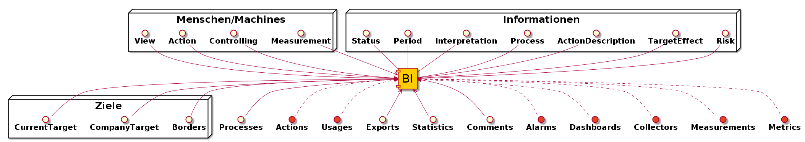
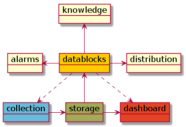

datablocks Funktionen¶
datablocks Funktionen
Ein kurzer Einblick in die Funktionsweise von datablocks
Mit ⇒ geht es weiter...
Erstellt vom useblocks team
Zu den anderen useblocks Präsentationen
Metriken und Kennzahl: Teil 1
Beantworten Metriken alle Fragen?
- Wer misst die Metrik?
- Wer braucht die Metrik?
- Was sind gute/schlechte Zahlen?
- Wie verbessert/verschlechtert man die Metrik?
- Welches Ziel soll erreicht werden?
- ...
Metriken und Kennzahl: Teil 2
datablocks BI Extensions
Informationen und Referenzen, die datablocks verwaltet:

Kennzahlen-SW-Landschaft: Teil 1

| Collectors | Storages | Dashboards | Suites |
|---|---|---|---|
| logstash | influxdb | kibana | Prometheus |
| TCollector | opentsdb | grafana | Jasper |
| Heka | Graphite | Graphite-Web | Pentaho |
| Zato | KairosDB | Dashing | |
| fluentd | SciDB | ||
| Scrapy | graylog | ||
| Nutch |
Und nicht zu vergessen: IBM, SAP, Oracle, Microsoft, Qlik, ...
Kennzahlen-SW-Landschaft: Teil 2
datablocks Service Integration
datablocks integriert sich in bestehende SW-Landschaften, ohne laufende Abläufe oder Prozesse zu gefährden.
Dadurch spart ein Unternehmen hohe Umstellungskosten, kann unterschiedliche und bedarfsspezifische Lösungen einsetzen und kann auch in Zukunft bei der SW-Auswahl frei agieren.

datablocks bietet eine gemeinse Web-Oberfläche für alle verbundenen (Teil-)Lösungen an.Kennzahlen Reports: Teil 1
Verbreitetste Lösung: E-Mails!

Kennzahlen Reports: Teil 2
datablocks Report Distribution
datablocks bietet zahlreiche Kanäle zum Erreichen der notwendigen Kennzahlen-Empfänger an.
Dadurch sparen Unternehmensmitarbeiter viel Zeit, da sie nur die Zahlen bekommen, die sie interessieren, und weil die Zahlen in ihre täglichen Arbeitswerkzeugen geliefert werden.

datablocks Funktionen
datablocks BI Extensions
datablocks Service Integrations
datablocks Report Distribution